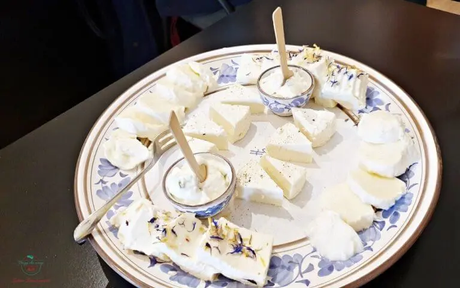
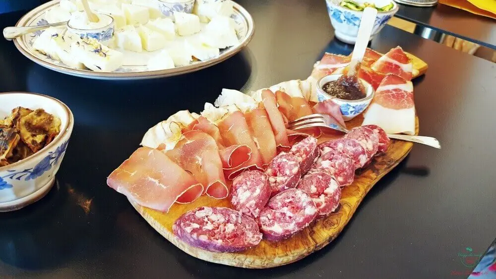
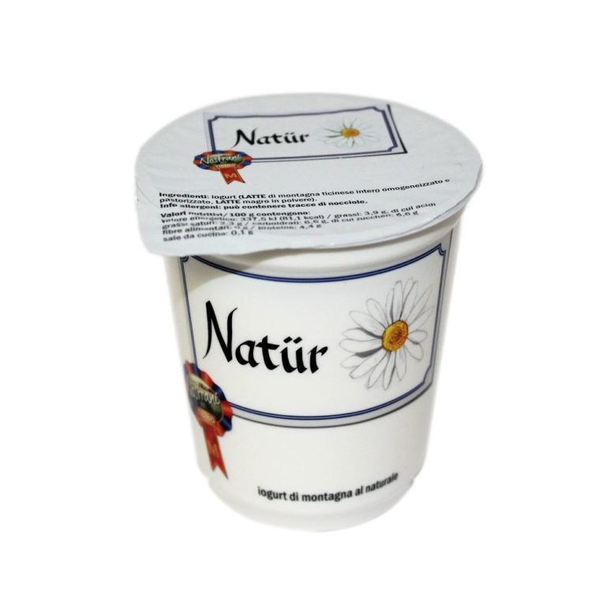

Abbiamo diversi prodotti tipici:
Latticini (Formaggi):
Latticini e formaggi stagionati per tutti i gusti.


Salumi:
Deliziosi salumi tipici.
Yoghurt:
Yoghurt con ricette tipiche e naturali.


Vini:
Vini direttamente dalle vigne della zona.